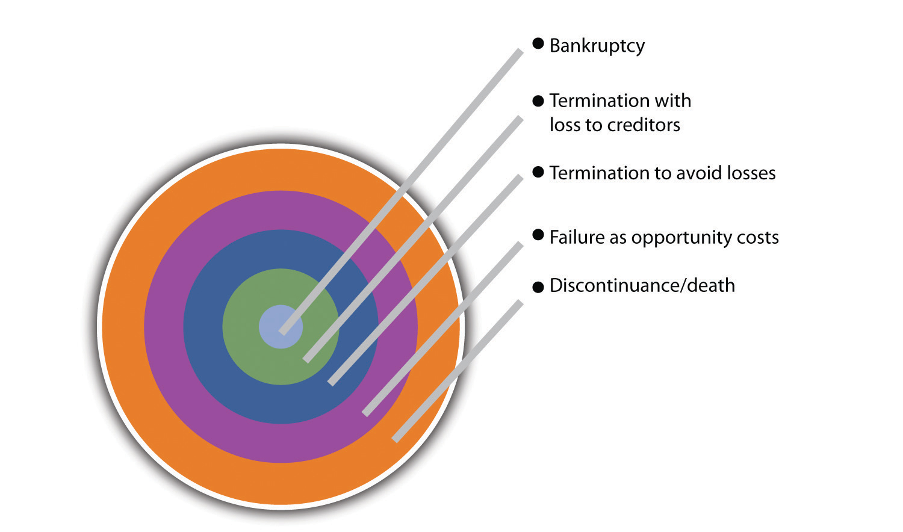

Source: Used with permission from Frank C. Trotta III.
Frank Trotta III is a recent college graduate, class of 2009, and an excellent example of the twenty-first-century small business owner. At 23, he is already running his own business and planning to open a second. This may be second nature because Frank III is a third-generation small business owner. His grandfather, Frank Trotta Sr., opened a supermarket in 1945. His son, Frank C. Trotta Jr., began his career by working in the supermarket. Soon he had his own hardware department within the store and was beginning to understand what it takes to be a successful grocer. He observed his dad interacting with his customers and providing value through customer service.
Frank Jr. now owns and operates one of Long Island’s most successful travel companies: the Prime Time Travel Club. The experience Frank Jr. garnered from his father in customer service became the tenet of his business philosophy: give customers value through personal attention and service. At an early age, Frank III worked in his dad’s office when he was not busy with school activities. He had a strong entrepreneurial leaning and became very interested in the travel industry. In high school, Frank III worked for his dad and learned different facets of the travel business. While attending a Connecticut university, Frank III reached out to other students on campus and started his own side business: booking spring break trips. The same people are now repeat customers who call him to book their vacations, honeymoons, and family trips.
In his junior year, Frank III created a travel site of his own: Cruisetoanywhere.com. He is involved with every aspect of the site: he takes all calls from the customer service number, produces all the marketing campaigns, and works on contracts with both major and smaller cruise lines. Although the site is still young, it has been very successful. Frank III is learning how larger competitors do business and from their successes and mistakes. Customer service and attention are his first priority. Frank III believes his competitive business edge comes from what he learned from his father’s company and business skills such as planning and managing cash flow from his professors. In addition to his cruise website, Frank III plans to launch another site, Tourstoanywhere.com. He exemplifies the skill set that will characterize the twenty-first-century small business owner: a clear focus on creating value for his customers, a willingness to exploit the benefits of digital technology and e-commerce, and the ability to apply basic business skills to the effective operation of the firm.
It’s an exciting time to be in small business. This is certainly not anything new, but you might not know it. Scan any issue of the popular business press, and in all probability, you will find a cover story on one of America’s or the world’s major corporations or a spotlight on their CEOs. Newspapers, talk radio, and television seem to have an unlimited supply of pundits and politicians eager to pontificate on firms that have been labeled as “too big to fail.” Listen to any broadcast of a weekday’s evening news program, and there will be a segment that highlights the ups and downs of the Dow Jones Industrial Average and the Standard and Poor’s (S&P) 500. These market measures provide an insight into what is going on in Wall Street. However, they are clearly biased to not only large firms but also huge firms. This creates the false notion that “real” business is only about big business. It fails to recognize that small businesses are the overwhelming majority of all businesses in America; not only are the majority of jobs in small businesses, but small businesses have also been the major driving force in new job creation and innovation. Small business is the dynamo of innovation in our economy. In 2006, Thomas M. Sullivan, the chief counsel for advocacy of the Small Business Administration (SBA), said, “Small business is a major part of our economy,…small businesses innovate and create new jobs at a faster rate than their larger competitors. They are nimble, creative, and a vital part of every community across the country.”“Small Business by the Numbers,” National Small Business Administration, accessed October 7, 2011, www.nsba.biz/docs/bythenumbers.pdf.
This text is devoted to small business, not entrepreneurship. There has always been a challenge to distinguish—correctly—between the small business owner and the entrepreneur. Some argue that there is no difference between the two terms. The word entrepreneur is derived from a French word for “to undertake,” which might indicate that entrepreneurs should be identified as those who start businesses.“A Definition of Entrepreneurship,” QuickMBA.com, accessed October 7, 2011, www.quickmba.com/entre/definition. However, this interpretation is too broad and is pointless as a means of distinguishing between the two. Some have tried to find differences based on background, education, or age.Nick Leiber, “The Anatomy of an Entrepreneur,” Bloomberg BusinessWeek, July 8, 2009, accessed October 7, 2011, www.BusinessWeek.com/smallbiz/running_small _business/archives/2009/07/anatomy_of_an_e.html. Often one finds the argument that entrepreneurs have a different orientation toward risk than small business owners. The standard line is that entrepreneurs are willing to take great risks in starting an enterprise and/or willing to start again after a business failure.“Entrepreneur vs. Small Business Owner: What’s the Difference?,” Mills Communication Group, July 22, 2009, accessed October 7, 2011, www.millscommgroup.com/blog/2009/06/entrepreneur-vs-small-business-owner-whats-the-difference. Others try to make the distinction based on the issue of innovation or the degree of innovation. Given this focus, entrepreneurs need not even work for small business because they can come up with innovative products, services, production, or marketing processes in large organizations.Dale Beermann, “Entrepreneur or Small Business Owner? Does It Matter?,” Brazen Careerist, January 30, 2009, accessed October 7, 2011, www.brazencareerist.com/2009/01/29/entrepreneur-or-small-business-owner-does-it-matter. Perhaps the most common interpretation of the entrepreneur is an individual involved in a high-tech start-up who becomes a billionaire. That is not the focus of this text. It centers on the true driving force of America’s economy—the small business.
This chapter gives a brief history of small business in the United States, the critical importance of small business to the American economy, the challenges facing small business owners as they struggle to survive and prosper, the requisite skills to be an effective small business owner, the critical importance of ethical behavior, and how these businesses may evolve over time. In addition, three critical success factors for the twenty-first-century small business are threaded through the text: (1) identifying and providing customer value, (2) being able to exploit digital technologies with an emphasis on e-business and e-commerce, and (3) properly managing your cash flow. These three threads are essential to the successful decision making of any contemporary small business and should be considered of paramount importance. They are everyday considerations.
Throughout American history, from colonial times until today, most businesses were small businesses, and they have played a vital role in America’s economic success and are a forge to our national identity. It would not be an exaggeration to say that the small businessperson has always held an important—even exalted—position in American life. Americans in the early republic were as suspicious of large economic enterprises as threats to their liberty as they were of large government. The historian James L. Houston discussed American suspicion of large economic enterprises: “Americans believed that if property was concentrated in the hands of a few in the republic, those few would use their wealth to control other citizens, seize political power, and warp the republic into an oligopoly.”Jack Beatty, The Age of Betrayal: The Triumph of Money in America 1865–1900 (New York: Alfred A. Knopf, 2007), 11. In fact, much of the impetus behind the Boston Tea Party was the fear on the part of local merchants and tradesmen that the East India Company, at that time the world’s largest corporation, was dumping low-priced tea in the colonies, which would have driven local business to ruin.Ted Nace, The Gangs of America: The Rise of Corporate Power and the Disabling of Democracy (San Francisco: Berrett-Koehler Publishers, 2003), 44. Jefferson’s promotion of the yeoman farmer, which included small merchants, as the bulwark of democracy stemmed from his fear of large moneyed interests: “The end of democracy and the defeat of the American Revolution will occur when government falls into the hands of lending institutions and moneyed incorporations.”Bob Higgins, “Like Lincoln, Jefferson, Madison—Americans Fear Corporate Control of Public Policy,” TPMCafe, February 17, 2011, accessed October 23, 2011, tpmcafe.talkingpointsmemo.com/talk/blogs/r/l/rlh974/2010/02/like-lincoln-jefferson -madison.php. So great was the fear of the large aggregation of wealth that the colonies and the early republic placed severe restrictions on the creation of corporate forms. In the first decades of the nineteenth century, state governments restricted the corporate form by limiting its duration, geographic scope, size, and even profits.Ted Nace, The Gangs of America: The Rise of Corporate Power and the Disabling of Democracy (San Francisco, Berrett-Koehler Publishers, 2003), 44. This was done because of the concern that corporations had the potential of becoming monopolies that would drive entrepreneurs out of business.
Eventually, however, some businesses grew in size and power. Their growth and size necessitated the development of a professional management class that was distinct from entrepreneurs who started and ran their own businesses. However, not until the post–Civil War period did America see the true explosion in big businesses. This was brought about by several factors: the development of the mass market (facilitated by the railroads); increased capital requirement for mass production; and the 1886 Supreme Court case of Santa Clara County v. Southern Pacific Railroad, which granted corporations “personhood” by giving them protection under the Fourteenth Amendment.
The growth of corporations evoked several responses that were designed to protect small businesses from their larger competitors. The Interstate Commerce Act (1887) was a federal law designed to regulate the rates charged by railroads to protect small farmers and businesses. Other federal laws—the Sherman Act (1890) and the Clayton Act (1914)—were passed with the initial intent of restricting the unfair trading practices of trusts. In the early years, however, the Sherman Act was used more frequently against small business alliances and unions than against large businesses. Congress continued to support small businesses through the passage of legislation. The Robinson-Patman Act of 1936 and the Miller-Tydings Act of 1937 were designed to protect small retailers from large chain retailers.Mansel Blackford, The History of Small Business in America, 2nd ed. (Chapel Hill, NC: University of North Carolina Press, 2003), 4.
The Depression and the post–World War II environments posed special challenges to small business operations. The Hoover and Roosevelt administrations created organizations (the Reconstruction Finance Corporation in 1932 and the Small War Plants Corporation in 1942) to assist small firms. The functions of several government agencies were subsumed into the Small Business AdministrationThe government agency that is charged with aiding, counseling, assisting, and protecting the interests of small business. in 1953. The designated purpose of the SBA was to “aid, counsel, assist and protect, insofar as is possible, the interests of small business concerns.”“What We Do,” Small Business Administration, accessed October 7, 2011, www.sba.gov/about-sba-services/what-we-do. The SBA functions to ensure that small businesses have a fair chance at securing government contracts. It also has the responsibility of defining what constitutes a small business.
If anything is to be learned from the passage of all this legislation, it is that, as Conte (2006) eloquently put it, “Americans continued to revere small businesspeople for their self-reliance and independence.”Christopher Conte, “Small Business in U.S. History,” America.gov, January 3, 2006, accessed October 7, 2011, www.america.gov/st/business-english/2008/July/20080814215602XJyrreP0.6187664.html.
The SBA definition of a small business has evolved over time and is dependent on the particular industry. In the 1950s, the SBA defined a small businessA firm that is independently owned and operated and not dominant in its field of operation. There are variations across industries with respect to competitiveness, entry and exit costs, distribution by size, growth rates, and technological change. firm as “independently owned and operated…and not dominant in its field of operation.”Mansel Blackford, The History of Small Business in America, 2nd ed. (Chapel Hill, NC: University of North Carolina Press, 2003), 4. This is still part of their definition. At that time, the SBA classified a small firm as being limited to 250 employees for industrial organizations. Currently, this definition depends on the North American Industry Classification System (NAICS) for a business. The SBA recognizes that there are significant differences, across industries, with respect to competitiveness, entry and exit costs, distribution by size, growth rates, and technological change. Although the SBA defines 500 employees as the limit for the majority of industrial firms and receipts of $7 million for the majority of service, retail, and construction firms, there are different values for some industries. Table 1.1 "Examples of Size Limits for Small Businesses by the SBA" presents a selection of different industries and their size limits.
Table 1.1 Examples of Size Limits for Small Businesses by the SBA
| NAICS Code | NAICS US Industry Title | Size Standards (Millions of $) | Size Standards (Number of Employees) |
|---|---|---|---|
| 111333 | Strawberry farming | 0.75 | |
| 113310 | Timber tract operations | 7.00 | |
| 114112 | Shellfish fishing | 4.00 | |
| 212210 | Iron ore mining | 500 | |
| 236115 | New single family housing construction | 33.50 | |
| 311230 | Breakfast cereal manufacturer | 1,000 | |
| 315991 | Hat, cap, and millenary manufacturing | 500 | |
| 443111 | Household appliance store | 9.00 | |
| 454311 | Heating oil dealers | 50 | |
| 483111 | Deep sea freight transportation | 500 | |
| 484110 | General freight trucking, local | 25.50 | |
| 511130 | Book publishers | 500 | |
| 512230 | Music publishers | 500 | |
| 541214 | Payroll services | 8.50 | |
| 541362 | Geophysical surveying and mapping services | 4.50 | |
| 541712 | Research and development in physical, engineering, and life sciences | 500 | |
| Except aircraft | 1,500 | ||
| 722110 | Full-service restaurants | 7.00 | |
| 722310 | Food service contractors | 20.50 | |
| 811111 | General automotive repair | 7.00 | |
| 812320 | Dry cleaning and laundry services | 4.50 | |
| 813910 | Business associations | 7.00 |
Source: “Table of Small Business Size Standards Matched to North American Industry Classification System Codes,” US Small Business Administration, August 22, 2008, accessed June 1, 2012, http://www.sba.gov/content/small-business-size-standards.
The SBA definition of what constitutes a small business has practical significance. Small businesses have access to an extensive support network provided by the SBA. It runs the SCORE program, which has more than 12,000 volunteers who assist small firms with counseling and training. The SBA also operates Small Business Development Centers, Export Assistance Centers, and Women’s Business Centers. These centers provide comprehensive assistance to small firms. There can be significant economic support for small firms from the SBA. It offers a variety of guaranteed loan programs to start-ups and small firms. It assists small firms in acquiring access to nearly half a trillion dollars in federal contracts. In fact, legislation attempts to target 23 percent of this value for small firms. The SBA can also assist with financial aid following a disaster.
In 1958, small business contributed 57 percent of the nation’s gross domestic product (GDP). This value dropped to 50 percent by 1980. What is remarkable is that this 50 percent figure has essentially held steady for the last thirty years.Katherine Kobe, “The Small Business Share of GDP, 1998–2004,” Small Business Research Summary, April 2007, accessed October 7, 2011, http://archive.sba.gov/advo/research/rs299tot.pdf. It is interesting to note that the contribution of small businesses to the GDP can vary considerably based on particular industries. Table 1.2 "Small Businesses’ Component of Industry Contribution to GDP" presents data for selected industries for the period 1998–2004. It can be seen that in some industries—construction and real estate—80 percent or more of that industry’s contribution to the GDP comes from small businesses, while in the information industry that number is 20 percent or less.
Few people realize that the overwhelming majority of businesses in the United States are small businesses with fewer than five hundred employees. The SBA puts the number of small businesses at 99.7 percent of the total number of businesses in the United States. However, most of the businesses are nonemployee businesses (i.e., no paid employees) and are home based.
Table 1.2 Small Businesses’ Component of Industry Contribution to GDP
| Year | Construction (%) | Real Estate and Leasing (%) | Wholesale Trade (%) | Transportation and Warehousing (%) | Information (%) |
|---|---|---|---|---|---|
| 1998 | 88.0 | 80.4 | 59.1 | 39.1 | 26.4 |
| 1999 | 87.2 | 80.0 | 57.5 | 39.4 | 25.4 |
| 2000 | 85.4 | 79.8 | 56.8 | 39.0 | 22.7 |
| 2001 | 85.1 | 80.3 | 55.3 | 41.1 | 19.7 |
| 2002 | 84.6 | 79.4 | 56.3 | 41.0 | 20.3 |
| 2003 | 85.4 | 79.5 | 54.6 | 39.1 | 20.3 |
| 2004 | 85.6 | 79.6 | 55.4 | 38.6 | 18.0 |
Source: Katherine Kobe, “Small Business Share of GDP (Contract No. SBAHQ-05-M-0413),” SBA Office of Advocacy, April 2007, accessed October 7, 2011, http://archive.sba.gov/advo/research/rs299tot.pdf.
One area where the public has a better understanding of the strength of small business is in the area of innovation. Evidence dating back to the 1970s indicates that small businesses disproportionately produce innovations.Zoltan J. Acs and David B. Audretsch. “Innovation in Large and Small Firms: An Empirical Analysis,” American Economic Review 78, no. 4 (1988): 678–90. It has been estimated that 40 percent of America’s scientific and engineering talent is employed by small businesses. The same study found that small businesses that pursue patents produce thirteen to fourteen times as many patents per employee as their larger counterparts. Further, it has been found that these patents are twice as likely to be in the top 1 percent of highest impact patents.“Small Business by the Numbers,” National Small Business Administration, accessed October 7, 2011, www.nsba.biz/docs/bythenumbers.pdf.
It is possible that small size might pose an advantage with respect to being more innovative. The reasons for this have been attributed to several factors:
Regardless of the reasons, small businesses, particularly in high-tech industries, play a critical role in preserving American global competitiveness.
The majority—approximately 50.2 percent in 2006—of private sector employees work for small businesses. A breakdown of the percentage of private sector employees by firm size for the period 1988 to 2006 is provided in Table 1.3 "Percentage of Private Sector Employees by Firm Size". For 2006, slightly more than 18 percent of the entire private sector workforce was employed by firms with fewer than twenty employees. It is interesting to note that there can be significant difference in the percentage of employment by small business across states. Although the national average was 50.2 percent in 2006, the state with the lowest percentage working for small businesses was Florida with 44.0 percent, while the state with the highest percentage was Montana with a remarkable 69.8 percent.“Small Business by the Numbers,” National Small Business Administration, accessed October 7, 2011, www.nsba.biz/docs/bythenumbers.pdf.
Table 1.3 Percentage of Private Sector Employees by Firm Size
| Year | 0–4 Employees | 5–9 Employees | 10–19 Employees | 20–99 Employees | 100–499 Employees | 500+ Employees |
|---|---|---|---|---|---|---|
| 1988 | 5.70% | 6.90%% | 8.26% | 19.16% | 14.53% | 45.45% |
| 1991 | 5.58% | 6.69% | 8.00% | 18.58% | 14.24% | 46.91% |
| 1994 | 5.50% | 6.55% | 7.80% | 18.29% | 14.60% | 47.26% |
| 1997 | 5.20% | 4.95% | 6.36% | 16.23% | 13.73% | 53.54% |
| 2000 | 4.90% | 5.88% | 7.26% | 17.78% | 14.26% | 49.92% |
| 2003 | 5.09% | 5.94% | 7.35% | 17.80% | 14.49% | 49.34% |
| 2006 | 4.97% | 5.82% | 7.24% | 17.58% | 14.62% | 49.78% |
Source: US Census Bureau, “Statistics of U.S. Business,” accessed October 7, 2011, http://www.census.gov/econ/susb.
Small business is the great generator of jobs. Recent data indicate that small businesses produced 64 percent of the net new jobs from 1993 to the third quarter of 2008.“Statistics of U.S. Businesses,” US Census Bureau, April 13, 2010, accessed October 7, 2011, www.census.gov/econ/susb. This is not a recent phenomenon. Thirty years of research studies have consistently indicated that the driving force in fostering new job creation is the birth of new companies and the net additions coming from small businesses. In the 1990s, firms with fewer than twenty employees produced far more net jobs proportionally to their size, and two to three times as many jobs were created through new business formation than through job expansion in small businesses.William J Dennis Jr., Bruce D. Phillips, and Edward Starr, “Small Business Job Creation: The Findings and Their Critics”, Business Economics 29, no. 3 (1994): 23–30. The US Census Bureau’s Business Dynamics Statistics data confirm that the greatest number of new jobs comes from the creation of new businesses. One can get a sense of the extent of net job change by business size in Table 1.4 "Job Creation by Firm Size".
An additional point needs to be made about job creation and loss by small businesses in the context of overall economic conditions. Government data show that of the “net 1.5 million jobs lost in 2008, 64 percent were from small firms.”Brian Headd, “An Analysis of Small Business and Jobs,” Small Business Administration, March 2010, accessed October 7, 2011, www.sba.gov/advo/research/rs359tot.pdf (p. 10). However, the same study had some interesting results from the past two recessions. In the 2001 recession, small businesses with fewer than 20 employees experienced 7 percent of the total reduction in jobs, firms with between 20 and 500 employees were responsible for 43 percent of the job losses, and the rest of the job losses came from large firms. As the economy recovered in the following year, firms with fewer than 20 employees created jobs, while the other two groups continued to shed jobs. Following the 1991 recession, it was firms with 20 to 500 employees that were responsible for more than 56 percent of the jobs that were added.
Table 1.4 Job Creation by Firm Size
| Years | 1–4 | 5–9 | 10–19 | 20–99 | 100–499 | 500+ |
|---|---|---|---|---|---|---|
| 2002–2003 | 1,106,977 | 307,690 | 158,795 | 304,162 | 112,702 | (994,667) |
| 2003–2004 | 1,087,128 | 336,236 | 201,247 | 199,298 | 66,209 | (214,233) |
| 2004–2005 | 897,296 | 141,057 | (11,959) | (131,095) | 83,803 | 262,326 |
| 2005–2006 | 1,001,960 | 295,521 | 292,065 | 590,139 | 345,925 | 1,072,710 |
Source: “Small Business Profile,” SBA Office of Advocacy, 2009, http://archive.sba.gov/advo/research/data.html.
One last area concerning the small business contribution to American employment is its role with respect to minority ownership and employment. During the last decade, there has been a remarkable increase in the number of self-employed individuals. From 2000 to 2007, the number of women who were self-employed increased by 9.7 percent. The number of African Americans who were self-employed increased by 36.6 percent for the same time range. However, the most remarkable number was an increase of nearly 110 percent for Hispanics. It is clear that small business has become an increasingly attractive option for minority groups.“Statistics of U.S. Businesses,” US Census Bureau, April 13, 2010, accessed October 7, 2011, www.census.gov/econ/susb. Women and Hispanics are also employed by small businesses at a higher rate than the national average.
There are no easy answers to questions about success and failure in a small business. The different points of view are all over the map.
Ask the average person what the purpose of a business is or how he or she would define a successful business, and the most likely response would be “one that makes a profit.” A more sophisticated reply might extend that to “one that makes an acceptable profit now and in the future.” Ask anyone in the finance department of a publicly held firm, and his or her answer would be “one that maximizes shareholder wealth.” The management guru Peter Drucker said that for businesses to succeed, they needed to create customers, while W. E. Deming, the quality guru, advocated that business success required “delighting” customers. No one can argue, specifically, with any of these definitions of small business successThe need for independence by small business owners., but they miss an important element of the definition of success for the small business owner: to be free and independent.
Many people have studied whether there is any significant difference between the small business owner and the entrepreneur. Some entrepreneurs place more emphasis on growth in their definition of success.William Dunkelberg and A. C. Cooper. “Entrepreneurial Typologies: An Empirical Study,” Frontiers of Entrepreneurial Research, ed. K. H. Vesper (Wellesley, MA: Babson College, Centre for Entrepreneurial Studies, 1982), 1–15. However, it is clear that entrepreneurs and small business owners define much of their personal and their firm’s success in the context of providing them with independence. For many small business owners, being in charge of their own life is the prime motivator: a “fervently guarded sense of independence,” and money is seen as a beneficial by-product.“Report on the Commission or Enquiry on Small Firms,” Bolton Report, vol. 339 (London: HMSO, February 1973), 156–73.,Paul Burns and Christopher Dewhurst, Small Business and Entrepreneurship, 2nd ed. (Basingstoke, UK: Macmillan, 1996), 17.,Graham Beaver, Business, Entrepreneurship and Enterprise Development (Englewood Cliffs, NJ: Prentice Hall, 2002), 33. Oftentimes, financial performance is seen as an important measure of success. However, small businesses are reluctant to report their financial information, so this will always be an imperfect and incomplete measure of success.Terry L. Besser, “Community Involvement and the Perception of Success Among Small Business Operators in Small Towns,” Journal of Small Business Management 37, no 4 (1999): 16.
Three types of small business operators can be identified based on what they see as constituting success:
When discussing failure rates in small business, there is only one appropriate word: confusion. There are wildly different values, from 90 percent to 1 percent, with a wide range of values in between.Roger Dickinson, “Business Failure Rate,” American Journal of Small Business 6, no. 2 (1981): 17–25. Obviously, there is a problem with these results, or some factor is missing. One factor that would explain this discrepancy is the different definitions of the term failure. A second factor is that of timeline. When will a firm fail after it starts operation?
The term failure can have several meanings.A. B. Cochran, “Small Business Failure Rates: A Review of the Literature,” Journal of Small Business Management 19, no. 4, (1981): 50–59. Small-business failureA broad term covering several types of failure: (1) discontinuance, (2) failure of opportunity cost, (3) avoidance of loss to creditors, (4) losses to creditors, and (5) bankruptcy. is often measured by the cessation of a firm’s operation, but this can be brought about by several things:
Failure can therefore be thought of in terms of a cascading series of outcomes (see Figure 1.1 "Types of Business Failures"). There are even times when small business owners involved in a closure consider the firm successful at its closing.Don Bradley and Chris Cowdery, “Small Business: Causes of Bankruptcy,” July 26, 2004, accessed October 7, 2011, www.sbaer.uca.edu/research/asbe/2004_fall/16.pdf. Then there is the complication of considering the industry of the small business when examining failure and bankruptcy. The rates of failure can vary considerably across different industries; in the fourth quarter of 2009, the failure rates for service firms were half that of transportation firms.“Equifax Study Shows the Ups and Downs of Commercial Credit Trends,” Equifax, 2010, accessed October 7, 2011, www.equifax.com/PR/pdfs/CommercialFactSheetFN3810.pdf.
Figure 1.1 Types of Business Failures
The second issue associated with small business failure is a consideration of the time horizon. Again, there are wildly different viewpoints. The Dan River Small Business Development Center presented data that indicated that 95 percent of small businesses fail within five years.Don Bradley and Chris Cowdery, “Small Business: Causes of Bankruptcy,” July 26, 2004, accessed October 7, 2011, www.sbaer.uca.edu/research/asbe/2004_fall/16.pdf. Dun and Bradstreet reported that companies with fewer than twenty employees have only a 37 percent chance of surviving four years, but only 10 percent will go bankrupt.Don Bradley and Chris Cowdery, “Small Business: Causes of Bankruptcy,” July 26, 2004, accessed October 7, 2011, www.sbaer.uca.edu/research/asbe/2004_fall/16.pdf. The US Bureau of Labor Statistics indicated that 66 percent of new establishments survive for two years, and that number drops to 44 percent two years later.Anita Campbell, “Business Failure Rates Is Highest in First Two Years,” Small Business Trends, July 7, 2005, accessed October 7, 2011, smallbiztrends.com/2005/07/business-failure-rates-highest-in.html. It appears that the longer you survive, the higher the probability of your continued existence. This makes sense, but it is no guarantee. Any business can fail after many years of success.
There is no more puzzling or better studied issue in the field of small business than what causes them to fail. Given the critical role of small businesses in the US economy, the economic consequences of failure can be significant. Yet there is no definitive answer to the question.
Three broad categories of causes of failure have been identified: managerial inadequacy, financial inadequacy, and external factors. The first cause, managerial inadequacyThe failure of a firm is based on the limitations of its owner, such as a lack of business skills or a lack of behavior skills., is the most frequently mentioned reason for firm failure.T. C. Carbone, “The Challenges of Small Business Management,” Management World 9, no. 10 (1980): 36. Unfortunately, it is an all-inclusive explanation, much like explaining that all plane crashes are due to pilot failure. Over thirty years ago, it was observed that “while everyone agrees that bad management is the prime cause of failure, no one agrees what ‘bad management’ means nor how it can be recognized except that the company has collapsed—then everyone agrees that how badly managed it was.”John Argenti, Corporate Collapse: The Causes and Symptoms (New York: McGraw-Hill, 1976), 45. This observation remains true today.
The second most common explanation cites financial inadequacyThe failure of a firm is based on financial issues, such as having inadequate financing at the beginning, inadequate financial controls, poor cash-flow management, and the inability to raise additional capital., or a lack of financial strength in a firm. A third set of explanations center on environmental or external factorsThe failure of the firm is based on external factors, such as a downturn in the economy, rising interest rates, or changes in customer demand., such as a significant decline in the economy.
Because it is important that small firms succeed, not fail, each factor will be discussed in detail. However, these factors are not independent elements distinct from each other. A declining economy will depress a firm’s sales, which negatively affects a firm’s cash flow. An owner who lacks the knowledge and experience to manage this cash flow problem will see his or her firm fail.
Managerial inadequacy is generally perceived as the major cause of small business failure. Unfortunately, this term encompasses a very broad set of issues. It has been estimated that two thirds of small business failures are due to the incompetence of the owner-manager.Graham Beaver, “Small Business: Success and Failure,” Strategic Change 12, no. 3 (2003): 115–22. The identified problems cover behavioral issues, a lack of business skills, a lack of specific technical skills, and marketing myopia. Specifying every limitation of these owners would be prohibitive. However, some limitations are mentioned with remarkable consistency. Having poor communication skills, with employees and/or customers, appears to be a marker for failure.Sharon Nelton, “Ten Key Threats to Success,” Nation’s Business 80, no. 6 (1992): 18–24. The inability to listen to criticism or divergent views is a marker for failure, as is the inability to be flexible in one’s thinking.Robert N. Steck, “Why New Businesses Fail,” Dun and Bradstreet Reports 33, no. 6 (1985): 34–38.
Ask many small business owners where their strategic plans exist, and they may point to their foreheads. The failure to conduct formal planning may be the most frequently mentioned item with respect to small business failure. Given the relative lack of resources, it is not surprising that small firms tend to opt for intuitive approaches to planning.G. E. Tibbits, “Small Business Management: A Normative Approach,” in Small Business Perspectives, ed. Peter Gorb, Phillip Dowell, and Peter Wilson (London: Armstrong Publishing, 1981), 105.,Jim Brown, Business Growth Action Kit (London: Kogan Page, 1995), 26. Formal approaches to planning are seen as a waste of time,Christopher Orpen, “Strategic Planning, Scanning Activities and the Financial Performance of Small Firms,” Journal of Strategic Change 3, no. 1 (1994): 45–55. or they are seen as too theoretical.Sandra Hogarth-Scott, Kathryn Watson, and Nicholas Wilson, “Do Small Business Have to Practice Marketing to Survive and Grow?,” Marketing Intelligence and Planning 14, no. 1 (1995): 6–18. The end result is that many small business owners fail to conduct formal strategic planning in a meaningful way.Isaiah A. Litvak and Christopher J. Maule, “Entrepreneurial Success or Failure—Ten Years Later,” Business Quarterly 45, no. 4 (1980): 65.,Hans J. Pleitner, “Strategic Behavior in Small and Medium-Sized Firms: Preliminary Considerations,” Journal of Small Business Management 27, no. 4 (1989): 70–75. In fact, many fail to conduct any planning;Richard Monk, “Why Small Businesses Fail,” CMA Management 74, no. 6 (2000): 12.,Anonymous, “Top-10 Deadly Mistakes for Small Business,” Green Industry Pro 19, no. 7 (2007): 58. others may fail to conduct operational planning, such as marketing strategies.Rubik Atamian and Neal R. VanZante, “Continuing Education: A Vital Ingredient of the ‘Success Plan’ for Business,” Journal of Business and Economic Research 8, no. 3 (2010): 37–42. The evidence appears to clearly indicate that a small firm that wishes to be successful needs to not only develop an initial strategic plan but also conduct an ongoing process of strategic renewal through planning.
Many managers do not have the ability to correctly select staff or manage them.T. Carbone, “Four Common Management Failures—And How to Avoid Them,” Management World 10, no. 8 (1981): 38–39. Other managerial failings appear to be in limitations in the functional area of marketing. Failing firms tend to ignore the changing demands of their customers, something that can have devastating effects.Anonymous, “Top-10 Deadly Mistakes for Small Business,” Green Industry Pro 19, no. 7 (2007): 58. The failure to understand what customers value and being able to adapt to changing customer needs often leads to business failure.Rubik Atamian and Neal R. VanZante, “Continuing Education: A Vital Ingredient of the ‘Success Plan’ for Business,” Journal of Business and Economic Research 8, no. 3 (2010): 37–42.
The second major cause of small business failure is finance. Financial problems fall into three categories: start-up, cash flow, and financial management. When a firm begins operation (start-up), it will require capital. Unfortunately, many small business owners initially underestimate the amount of capital that should be available for operations.Howard Upton, “Management Mistakes in a New Business,” National Petroleum News 84, no. 10 (1992): 50. This may explain why most small firms that fail do so within the first few years of their creation. The failure to start with sufficient capital can be attributed to the inability of the owner to acquire the needed capital. It can also be due to the owner’s failure to sufficiently plan for his or her capital needs. Here we see the possible interactions among the major causes of firm failure. Cash-flow management has been identified as a prime cause for failure.Rubik Atamian and Neal R. VanZante, “Continuing Education: A Vital Ingredient of the ‘Success Plan’ for Business,” Journal of Business and Economic Research 8, no. 3 (2010): 37–42.,Arthur R. DeThomas and William B. Fredenberger, “Accounting Needs of Very Small Business,” The CPA Journal 55, no. 10 (1985): 14–20. Good cash-flow management is essential for the survival of any firm, but small firms in particular must pay close attention to this process. Small businesses must develop and maintain effective financial controls, such as credit controls.Roger Brown, “Keeping Control of Your Credit,” Motor Transportation, April 2009, 8. For very small businesses, this translates into having an owner who has at least a fundamental familiarity with accounting and finance.Arthur R. DeThomas and William B. Fredenberger, “Accounting Needs of Very Small Business,” The CPA Journal 55, no. 10 (1985): 14–20. In addition, the small firm will need either an in-house or an outsourced accountant.Hugh M. O’Neill and Jacob Duker, “Survival and Failure in Small Business,” Journal of Small Business Management 24, no. 1 (1986): 30–37. Unfortunately, many owners fail to fully use their accountants’ advice to manage their businesses.Arthur R. DeThomas and William B. Fredenberger, “Accounting Needs of Very Small Business,” The CPA Journal 55, no. 10 (1985): 14–20.
The last major factor identified with the failure of small businesses is the external environment. There is a potentially infinite list of causes, but the economic environment tends to be most prominent. Here again, however, confusing appears to describe the list. Some argue that economic conditions contribute to between 30 percent and 50 percent of small business failures, in direct contradiction to the belief that managerial incompetence is the major cause.Jim Everett and John Watson, “Small Business Failures and External Risk Factors,” Small Business Economics 11, no. 4 (1998): 371–90. Two economic measures appear to affect failure rates: interest rates, which appear to be tied to bankruptcies, and the unemployment rate, which appears to be tied to discontinuance.Jim Everett and John Watson, “Small Business Failures and External Risk Factors,” Small Business Economics 11, no. 4 (1998): 371–90. The potential impact of these external economic variables might be that small business owners need to be either planners to cover potential contingencies or lucky.
Even given the confusing and sometimes conflicting results with respect to failure in small businesses, some common themes can be identified. The reasons for failure fall into three broad categories: managerial inadequacy, finance, and environmental. They, in turn, have some consistently mentioned factors (see Table 1.5 "Reasons for Small Business Failure"). These factors should be viewed as warning signs—danger areas that need to be avoided if you wish to survive. Although small business owners cannot directly affect environmental conditions, they can recognize the potential problems that they might bring. This text will provide guidance on how the small business owner can minimize these threats through proactive leadership.
Table 1.5 Reasons for Small Business Failure
| Managerial Inadequacy | Financial Inadequacy | External Factors |
|---|---|---|
|
|
|
Ultimately, business failure will be a company-specific combination of factors. Monitor101, a company that developed an Internet information monitoring product for institutional investors in 2005, failed badly. One of the cofounders identified the following seven mistakes that were made, most of which can be linked to managerial inadequacy:Roger Ehrenberg, “Monitor 110: A Post Mortem—Turning Failure into Learning,” Making It!, August 27, 2009, accessed June 1, 2012, http://www.makingittv.com/Small-Business-Entrepreneur-Story-Failure.htm.
Bloomberg Businessweek's 2008 cover story highlights owners who turn business failure into success.
http://www.businessweek.com/magazine/content/08_70/s0810040731198.htm
Small businesses come in all shapes and sizes. One thing that they all share, however, is experience with common problems that arise at similar stages in their growth and organizational evolution. Predictable patterns can be seen. These patterns “tend to be sequential, occur as a hierarchical progression that is not easily reversed, and involve a broad range of organizational activities and structures.”“Organizational Life Cycle,” Inc., 2010, accessed October 7, 2011, www.inc.com/encyclopedia/organizational-life-cycle.html. The industry life cycle adds further complications. The success of any small business will depend on its ability to adapt to evolutionary changes, each of which will be characterized by different requirements, opportunities, challenges, risks, and internal and external threats. The decisions that need to be made and the priorities that are established will differ through this evolution.
Understanding the small business growth stagesThe five stages that small businesses may go through: existence, survival, success, take-off, and resource maturity. can be invaluable as a framework for anticipating resource needs and problems, assessing risk, and formulating business strategies (e.g., evaluating and responding to the impact of a new tax). However, the growth stages will not be applicable to all small businesses because not all small businesses will be looking to grow. Business success is commonly associated with growth and financial performance, but these are not necessarily synonymous—especially for small businesses. People become business owners for different reasons, so judgments about the success of their businesses may be related to any of those reasons.B. Kotey and G. G. Meredith, “Relationships among Owner/Manager Personal Values, Business Strategies, and Enterprise Performance,” Journal of Small Business Management 35, no. 2 (1997): 37–65. A classic study by Churchill and Lewis identified five stages of small business growth: existence, survival, success, take-off, and resource maturity.Neil C. Churchill and Virginia L. Lewis, “The Five Stages of Small Business Growth,” Harvard Business Review 61, no. 3 (1983): 30–44, 48–50. Each stage has its own challenges.
Superimposed on the stages of small business growth is the organizational life cycle (OLC)The four stages that organizations go through in their development: birth, youth, midlife, and maturity., a concept that specifically acknowledges that organizations go through different life cycles, just like people do.Carter McNamara, “Basic Overview of Organizational Life Cycles,” accessed October 7, 2011, http://managementhelp.org/organizations/life-cycles.htm. “They are born (established or formed), they grow and develop, they reach maturity, they begin to decline and age, and finally, in many cases, they die.”“Organizational Life Cycle,” Inc., 2010, accessed October 7, 2011, www.inc.com/encyclopedia/organizational-life-cycle.html. The changes that occur in organizations have a predictable pattern,Robert E. Quinn and Kim Cameron, “Organizational Life Cycles and Shifting Criteria of Effectiveness: Some Preliminary Evidence,” Management Science 29, no. 1 (1983): 33–51. and this predictability will be very helpful in formulating the objectives and strategies of a small business, altering managerial processes, identifying the sources of risk, and managing organizational change.“Organizational Life Cycle,” Inc., 2010, accessed October 7, 2011, www.inc.com/encyclopedia/organizational-life-cycle.html.,Yash P. Gupta and David C. W. Chin, “Organizational Life Cycle: A Review and Proposed Directions for Research,” The Mid-Atlantic Journal of Business 30, no. 3 (December 1994): 269–94. Because not all small businesses are looking to grow, however, it is likely that many small companies will retain simple organizational structures.
For those small businesses that are looking to grow, the move from one OLC stage to another occurs because the fit between the organization and its environment is so inadequate that either the organization’s efficiency and/or effectiveness is seriously impaired or the organization’s very survival is threatened. Pressure will come from changes in the nature and number of requirements, opportunities, and threats.“Organizational Life Cycle,” Inc., 2010, accessed October 7, 2011, www.inc.com/encyclopedia/organizational-life-cycle.html.
Four OLC stages can be observed: birth, youth, midlife, and maturity.Carter McNamara, “Basic Overview of Organizational Life Cycles,” accessed October 7, 2011, http://managementhelp.org/organizations/life-cycles.htm. In the birthA business is small and has a simple organizational structure; the owner does everything. stage, a small business will have a very simple organizational structure, one in which the owner does everything. There are few, if any, subordinates. As the business moves through youthA business is medium-sized. It has some departments, a few rules, and is prebureaucratic. and midlifeA business has many departments, is bureaucratic, and has policy and procedure manuals., more sophisticated structures will be adopted, and authority will be decentralized to middle- and lower-level managers. At maturity, firms will demonstrate significantly more concern for internal efficiency, install more control mechanisms and processes, and become very bureaucratic. There are other features as well that characterize the movement of an organization from birth to maturity, which are summarized in Table 1.6 "Organizational Life Cycle Features".
Table 1.6 Organizational Life Cycle Features
| Feature | Birth Cycle | Youth Cycle | Midlife Cycle | Maturity Cycle |
|---|---|---|---|---|
| Size | Small | Medium | Large | Very large |
| Bureaucratic | Nonbureaucratic | Prebureaucratic | Bureaucratic | Very bureaucratic |
| Division of labor | Overlapping tasks | Some departments | Many departments | Extensive, with small jobs and many descriptions |
| Centralization | One-person rule | Two leaders rule | Two department heads | Top-management heavy |
| Formalization | No written rules | Few rules | Policy and procedure manuals | Extensive |
| Administrative intensity | Secretary, no professional staff | Increasing clerical and maintenance | Increasing professional and staff support | Large-multiple departments |
| Internal systems | Nonexistent | Crude budget and information | Control systems in place: budget, performance, reports, etc. | Extensive planning, financial, and personnel added |
| Lateral teams, task forces for coordination | None | Top leaders only | Some use of integrators and task | Frequent at lower levels to break down bureaucracy |
Source: Richard L. Daft, Organizational Theory and Design (St. Paul, MN: West Publishing, 1992), as cited in Carter McNamara, “Basic Overview of Organizational Life Cycles,” accessed October 7, 2011, http://managementhelp.org/organizations/life-cycles.htm.
A small business will always be somewhere on the OLC continuum. Business success will often be based on recognizing where the business is situated along that continuum and adopting strategies best suited to that place in the cycle.
The industry life cycle (ILC) is another dimension of small business evolution, which needs to be understood and assessed in concert with the stages of small business growth and the OLC. All small businesses compete in an industry, and that industry will experience a life cycle just as products and organizations do. Although there may be overlap in the names of the ILC stages, the meaning and implications of each stage are different.
The industry life cycleThe life stages that characterize an industry. refers to the continuum along which an industry is born, grows, matures, and eventually experiences decline and then dies. Although the pattern is predictable, the duration of each stage in the cycle is not. The stages are the same for all industries, but every industry will experience the stages differently. The stages will last longer for some and pass quickly for others; even within the same industry various small businesses may find themselves at different life cycle stages.“Industry Life Cycle,” Inc., 2010, accessed June 1, 2012, www.inc.com/encyclopedia/industry-life-cycle.html. However, no matter where a small business finds itself along the ILC continuum, the strategic planning of that business will be influenced in important ways.
According to one study, the ILC, charted on the basis of the growth of an industry’s sales over time, can be observed as having four stages: introduction, growth, maturity, and decline.“Industry Life Cycle,” Inc., 2010, accessed June 1, 2012, www.inc.com/encyclopedia/industry-life-cycle.html. The introductionAn industry is in infancy; significant cash is required, and profits are usually negative. stage“Organizational Life Cycle,” Inc., 2010, accessed October 7, 2011, www.inc.com/encyclopedia/organizational-life-cycle.html. finds the industry in its infancy. Although it is possible for a small business to be alone in the industry as a result of having developed and introduced something new to the marketplace, this is not the usual situation. The business strategy will focus on stressing the uniqueness of the product or the service to a small group of customers, commonly referred to as innovators or early adopters. A significant amount of capital is required. Profits are usually negative for both the firm and the industry.
The growthAn industry in which significant capital is required, economies of scale kick in, and many firms are profitable. stage“Organizational Life Cycle,” Inc., 2010, accessed October 7, 2011, www.inc.com/encyclopedia/organizational-life-cycle.html. is the second ILC stage. This stage also requires a significant amount of capital, but increasing product standardization may lead to economies of scale that will, in turn, increase profitability. The strategic focus is product differentiation, with an increased focus on responding to customer needs and interests. Intense competition will result as more new competitors join the industry, but many firms will be profitable. The duration of the growth stage will be industry dependent.
The maturityA business is very large, very bureaucratic, and top-management heavy. An industry in which there is competition from late entrants and where the marketing focus is on differentiation. stage“Organizational Life Cycle,” Inc., 2010, accessed October 7, 2011, www.inc.com/encyclopedia/organizational-life-cycle.html. will see some competition from late entrants that will try to take market share away from existing companies. This means that the marketing effort must continue to focus on product or service differentiation. There will be fewer firms in mature industries, so those that survive will be larger and more dominant. Many small businesses may move into the ranks of midsize or big businesses.
The declineAn industry that is triggered by product or service innovation. The industry becomes obsolete, sales suffer, and many companies leave. stage“Organizational Life Cycle,” Inc., 2010, accessed October 7, 2011, www.inc.com/encyclopedia/organizational-life-cycle.html. occurs in most industries. It is typically triggered by a product or service innovation that renders the industry obsolete. Sales will suffer, and the business goes into decline. Some companies will leave the industry, but others will remain to compete in the smaller market. The smaller businesses may be more agile for competing in a declining industry, but they will need to carefully formulate their business strategies to remain viable.
EthicsStandards of right and wrong. are about doing the right thing. They are about well-based standards of right and wrong that prescribe what humans ought to do—usually in terms of rights, obligations, benefits to society, fairness, or specific virtues.Manuel Velasquez et al., “What Is Ethics?,” Santa Clara University: Markula Center for Applied Ethics, 2010, accessed October 7, 2011, www.scu.edu/ethics/practicing/decision/whatisethics.html. They serve as guidelines for making decisions about how to behave in specific situations; they also guide us in evaluating the actions of others.Daniel J. Brown and Jonathan B. King, “Small Business Ethics: Influences and Perceptions,” Journal of Small Business Management 11, no. 8 (1982): 11–18. Hopefully, they will provide us with a good understanding of how to react to situations long before those situations occur.
It is important to understand what ethics are not.“A Framework for Thinking Ethically,” Santa Clara University: Markula Center for Applied Ethics, 2009, accessed October 7, 2011, www.scu.edu/ethics/practicing/decision/framework.html.
Ethics are important because they provide structure and stabilization for society. They help us to understand what is good and bad, and this helps us to choose between right and wrong actions. Without ethics, our actions would be “random and aimless, with no way to work toward a goal because there would be no way to pick between a limitless number of goals.”Jeff Landauer and Joseph Rowlands, “Values,” Importance of Philosophy, 2001, accessed October 7, 2011, www.importanceofphilosophy.com/Ethics_Values.html. Ethics do not provide easy answers to hard questions, but they do provide a framework within which to seek the answers.
Business ethicsApplying the virtue and discipline of ethics to business behavior. is applying the virtues and discipline of ethics to business behavior. They set the standard for how your business is conducted and define the value system of how you operate in the marketplace and within your business.“Business Ethics,” Small Business Notes, accessed October 7, 2011, www.smallbusinessnotes.com/operating/leadership/ethics.html. They are relevant to any and all aspects of business conduct: workplace issues, product and brand, corporate wrongdoing, professional ethics, and global business ethics. They apply equally to the individual who works for the company and to the company itself because all ethical and unethical business behavior eventually finds its way to the bottom line. It is almost a certainty that someone will encounter an ethical dilemma at some point in his or her professional life.
Business Ethics in the Twenty-First Century
A PBS documentary about business ethics and social responsibility.
Asking whether business ethics pay may be the wrong question to ask. Behaving ethically should happen because it is the right thing to do. However, companies large and small are in the business of making money, so the question is not an unreasonable one. Good ethics carry many benefits, not the least of which is financial good health. Companies that “outbehave” the competition ethically will also tend to outperform them financially.Richard McGill Murphy, “Why Doing Good Is Good for Business,” CNNMoney.com, February 2, 2010, accessed October 7, 2011, money.cnn.com/2010/02/01/news/companies/dov_seidman_lrn.fortune. According to an Institute of Business Ethics report, companies with a code of conduct generated significantly more economic value added and market value added than those companies without a code, experienced less price to earnings volatility, and showed a 50 percent increase in average return on capital employed.Simon Webley and Elise More, “Does Business Ethics Pay?,” Institute of Business Ethics, 2003, accessed October 7, 2011, www.ibe.org.uk/userfiles/doesbusethicpaysumm.pdf.
Business ethics also pay in other ways that will improve the workplace climate and, ultimately, positively impact the bottom line. They can “reduce incidents of corruption, fraud, and other malpractices; enhance the trust of customers, suppliers and contractors; enhance the credibility of buyers and salespersons; and enhance the loyalty and goodwill of employees, shareholders and customers.”Simon Webley and Elise More, “Does Business Ethics Pay?,” Institute of Business Ethics, 2003, accessed October 7, 2011, www.ibe.org.uk/userfiles/doesbusethicpaysumm.pdf.
By contrast, the costs of unethical business behavior can be staggering. Some of the costs include the loss of physical assets, increased security, the loss of customers, the loss of employees, the loss of reputation, legal costs, the loss of investor confidence, regulatory intrusion, and the costs of bankruptcy. According to a report by the Josephson Institute,“The Hidden Costs of Unethical Behavior,” Josephson Institute, 2004, accessed October 7, 2011, josephsoninstitute.org/pdf/Report_HiddenCostsUnethicalBehavior.pdf. unethical business behavior has an adverse impact on sales, stock prices, productivity, the performance of the highly skilled employees, efficiency, communication, and employee retention and recruiting plus the risks from scandal and employee fraud.
The costs of employee theft are particularly daunting. An estimated 75 percent of employees steal from the workplace, and most do so repeatedly. One third of all US corporate bankruptcies are caused directly by employee theft; US companies lose nearly $400 billion per year in lost productivity due to “time theft” or loafing; and an estimated 20 percent of every dollar earned by a US company is lost to employee theft.Terrence Shulman, “Employee Theft Statistics,” Employee Theft Solutions, 2007, accessed October 7, 2011, www.employeetheftsolutions.com. Office supplies, money, and merchandise are the most frequently stolen items.Leslie Taylor, “Four in 10 Managers Have Fired Employees for Theft,” Inc., September 1, 2006, accessed October 7, 2011, www.inc.com/news/articles/200609/theft.html?partner=rss. Employee theft may be even more of a concern to small businesses because many small businesses operate so close to the margin. It has been estimated that theft by small business employees totals nearly $40 billion each year.Mary Paulsell, “The Problem of Employee Theft,” MissouriBusiness.net, October 10, 2007, accessed October 7, 2011, www.missouribusiness.net/sbtdc/docs/problem_employee_theft.asp.
In business, it is common for there to be conflicts between business success and ethical behavior. When faced with an ethical dilemma, the decision may be unduly influenced by profits and legality. This challenge is particularly acute for small business owners because they are so much closer to the employees and the customers. The results of ethical decisions will be felt more immediately by the entire company.Karen E. Klein, “Making the Case for Business Ethics,” Bloomberg BusinessWeek, April 26, 2010, accessed October 7, 2011, www.BusinessWeek.com/smallbiz/content/dec2008/sb20081230_999118.htm.
Small-business owners will find themselves confronted more often with ethical choices because of the decision-making autonomy that they have; there is no need to answer to a large number of employees, corporate management, or a corporate board. The ethical choices that are made will likely impact a far greater number of people than will the ethical decisions of individual employees. Many business decisions will pose ethical challenges—examples being whether to use inferior materials to produce products because of competition with larger businesses, employee and workplace problems, product quality and pricing, legal problems, and government regulatory concerns.Jeffrey S. Hornsby et al., “The Ethical Perceptions of Small Business Owners: A Factor Analytic Study,” Journal of Small Business Management 32 (1994): 9–16, adapted. The pressure to make an unethical choice on behalf of the small business can be very powerful, especially when the health and vitality of the business may be at stake.“Business Ethics,” Answers.com, 2001, accessed October 7, 2011, www.answers.com/topic/business-ethics. Fortunately, the chances of an unethical decision being made in a small business are lower because the individual or individuals who are harmed will always be more visible. It is more difficult for the small business owner to be unethical. Ultimately, small business owners will behave in accordance with “their own moral compass, sense of fair play and inclination to deal in good faith.”Jim Blasingame, “Small Business Ethics,” Small Business Advocate, August 13, 2001, accessed October 7, 2011, www.smallbusinessadvocate.com/motivational-minutes/small-business-ethics-22.
According to one study,Daniel J. Brown and Jonathan B. King, “Small Business Ethics: Influences and Perceptions,” Journal of Small Business Management 11, no. 8 (1982): 11–18. small businesses see norms and pressures from the community and peers as having more influence on their ethics than moral or religious principles, the anticipation of rewards, upholding the law, or the fear of punishment. This leads to the conclusion that small business is influenced significantly by the communities in which their businesses are located. Socially responsive behavior is visible and it is “rewarded or sanctioned by local residents through changes in employee morale, performance, and turnover; customer loyalty; and positive interactions with business service professionals, suppliers, local government officials, and business colleagues. These local sanctioning mechanisms [in turn affected] the success of the business.”Terry L. Besser, “Community Involvement and the Perception of Success among Small Business Operators in Small Towns,” Journal of Small Business Management 37, no. 4 (1999): 16–29.
Because of this community influence, customer relationships are and must be based on trust and the relatively immediate visibility of ethical behavior. It is perhaps not surprising that people in small business are ranked number one on ethical standards ahead of physicians, people in big business, and government officials.Daniel J. Brown and Jonathan B. King, “Small Business Ethics: Influences and Perceptions,” Journal of Small Business Management 11, no. 8 (1982): 11–18.
The small business owner is in a unique position to set the ethical tone for the business. Employees will follow the lead of the owner when executing their duties and tending to their responsibilities, so it is critical that the owner establish an ethical work environment.“Business Ethics,” Answers.com, 2001, accessed October 7, 2011, www.answers.com/topic/business-ethics. Establishing an ethics policy (code of conduct or code of ethics)The rules and expectations about workplace behavior. is an important step in creating that environment. Employees who work in companies with active ethics programs; who observe leaders modeling ethical behavior; and who see honesty, respect, and trust applied frequently in the workplace have reported more positive experiences that include the following:Natalie Rhoden, “Ethics in the Workplace,” Articlesbase, November 5, 2008, accessed October 7, 2011, www.articlesbase.com/human-resources-articles/ethics-in-the -workplace-629384.html.
These positive work experiences would be even more notable in small businesses because of the smaller number of employees.
Employee perceptions of their organization’s ethical leadership may well be the most important driver of employee trust and loyalty.Jennifer Schramm, “Perceptions on Ethics,” HR Magazine, November 2004, 176. Having an ethical culture should, therefore, be a top priority for every small business.
Many small business owners may feel that a code of ethics is unnecessary. However, the benefit of having such a code is higher employee morale and commitment, more loyal customers, and a more supportive community. Even the nonemployee small business benefits. A code of ethics puts your business in a more positive, proactive light, and it spells out to customers and employees what behavior is and is not appropriate.Jeff Wuorio, “Put It in Writing: Your Business Has Ethics,” Microsoft Small Business, 2011, accessed October 7, 2011, www.microsoft.com/business/en-us/resources/management/leadership-training/put-it-in-writing-your-business-has-ethics.aspx ?fbid=WTbndqFrlli.
There is no recipe for developing an ethics policy. Its development may involve no one other than the small business owner, but it should involve several people. The contents should be specific to the values, goals, and culture of each company, and it should be “a central guide and reference for users in support of day-to-day decision making. It is meant to clarify an organization’s mission, values, and principles, linking them with the standards of professional conduct.”“Why Have a Code of Conduct,” Ethics Resource Center, May 29, 2009, accessed October 7, 2011, www.ethics.org/resource/why-have-code-conduct. Small-business owners must decide what will make the most sense for their companies. Jeff Wuorio offered the following eight guidelines:Jeff Wuorio, “Put It in Writing: Your Business Has Ethics,” Microsoft Small Business, 2011, accessed October 7, 2011, www.microsoft.com/business/en-us/resources/management/leadership-training/put-it-in-writing-your-business-has-ethics.aspx ?fbid=WTbndqFrlli.
The actual development of a code of ethics can be done by starting from scratch, hiring a consultant, or customizing a code from another organization. Before making a choice, it would be worth doing some research. A good place to start would be www.conductcode.com, a website that looks at codes of conduct from a practitioner approach. A search of the Internet will provide examples of codes of ethics, but there is a bias toward larger companies, so small business owners will have to pick and choose what will be best suited to their respective companies.
The Ethics Resource Center conducted a survey of employees at large and small businesses and found the following:
There are three threads that flow throughout this text: customer value, cash flow, and digital resources and e-environments. These threads can be likened to the human body. Cash flow is the circulatory system, without which there can be no life. Digital technology and e-business are the internal organs that carry out daily processes. E-commerce is the sensory system that enables business to observe and interact with the external environment. Customer value is overall health. These threads must figure prominently in all small business decision making. Although they are necessary but not sufficient conditions for small business survival, the chances for survival will be reduced significantly if they are not used.
In 1916, Nathan Hanwerker was an employee at one of the largest restaurants on Coney Island—but he had a vision. Using his wife’s recipe, he and his wife opened a hot dog stand. He believed that the combination of a better tasting hot dog and the nickel price, half that of his competitors, was his recipe for success. He was wrong. Unfortunately for Nathan, Upton Sinclair’s book The Jungle a decade before had made the public suspicious of low-cost meat products. Nathan discovered that his initial business model was not working. Customers valued taste and cost, but they also valued the quality of a safe product. To convince customers that his hot dogs were safe, he secured several doctors’ smocks and had people wear them. The sight of “doctors” consuming Nathan’s hot dogs gave customers the extra value that they needed. It was all about the perception of quality. If doctors were eating the hot dogs, they must be OK. Today there are over 20,000 outlets serving Nathan’s hot dogs.John A. Jakle and Keith A. Sculle, Fast Food (Baltimore: Johns Hopkins University Press, 1999), 163–64.
In principle, customer valueThe difference between the benefits a customer receives from a product or a service and the costs associated with obtaining the product or the service. is a very simple concept. It is the difference between the benefits that a customer receives from a product or a service and the costs associated with obtaining that product or service. Total customer benefitThe perceived monetary value of economic, functional, and psychological benefits customers expect from a product or a service because of the products, services, personnel, and images involved. refers to the perceived monetary value of the bundle of economic, functional, and psychological benefits customers expect from a product or a service because of the products, services, personnel, and images involved. Total customer costThe perceived bundle of costs customers expect to incur when they evaluate, obtain, use, and dispose of the product or the service., the perceived bundle of costs that customers expect to occur when they evaluate, obtain, use, and dispose of the product or use the service, include monetary, time, energy, and psychological costs.Philip Kotler and Kevin Lane, Marketing Management (Upper Saddle River, NJ: Pearson Prentice-Hall, 2009), 121. In short, it is all about what customers get and what they have to give up.
In reality, the creation of customer value will always be a challenge—particularly because it almost always needs to be defined on the customer’s terms.H. Whitelock, “How to Create Customer Value,” eZine Articles, March 16, 2007, accessed October 7, 2011, ezinearticles.com/?How-to-Create-Customer-Value &id=491697. Nonetheless, “the number one goal of business should be to ‘maximize customer value and strive to increase value continuously.’ If a firm maximizes customer value, relative to competitors, success will follow. If a firm’s products are viewed as conveying little customer value, the firm will eventually atrophy and fail.”Earl Nauman, Creating Customer Value: The Path to Sustainable Competitive Advantage (New York: Free Press, 1995), 16. This will certainly be true for the small business that is much closer to its customers than the large business.
The small business owner needs to be thinking about customer value every day: what is offered now, how it can be made better, and what the competition is doing that is offering more value. It is not easy, but it is essential. All business decisions will add to or detract from the value that can be offered to the customer. If your product or service is perceived to offer more value than that of the competition, you will get the sale. Otherwise, you will not get the sale.
Revenue is vanity…margin is sanity…cash is king.
Unknown.
Most people would define success with respect to profits or sales. This misses a critical point. The survival of a firm hinges not so much on sales or profits, although these are vitally important, as it does on the firm’s ability to meet its financial obligations. A firm must learn to properly manage its cash flowThe money coming into and exiting a business., defined as the money coming into and flowing from a business because cash is more than king. It is a firm’s lifeblood. As the North Dakota Small Business Development Center put it, “Failure to properly plan cash flow is one of the leading causes for small business failure.”“Why Is Cash Flow So Important?,” North Dakota Small Business Development Center, 2005, accessed October 7, 2011, www.ndsbdc.org/faq/default.asp?ID=323.
An understanding of cash flow requires some understanding of accounting systems. There are two types: cash based and accrual. In a cash-based accountingSales are recorded when the money is received. system, sales are recorded when you receive the money. This type of system is really meant for small firms with sales totaling less than $1 million. Accrual accountingThe focus is on measuring profits. systems, by contrast, are systems that focus on measuring profits. They assume that when you make a sale, you are paid at that point. However, almost all firms make sales on credit, and they also make purchases on credit. Add in that sales are seldom constant, and you begin to see how easily and often cash inflows and outflows can fall out of sync. This can reduce a firm’s liquidityThe ability of a small business to pay its bills., which is its ability to pay its bills. Envision the following scenario: A firm generates tremendous sales by using easy credit terms: 10 percent down and one year to pay the remaining 90 percent. However, the firm purchases its materials under tight credit terms. In an accrual accounting system, this might appear to produce significant profits. However, the firm may be unable to pay its bills and salaries. In this type of situation, the firm, particularly the small firm, can easily fail.
There are other reasons why cash flow is critically important. Firms need to have the money to buy new materials or expand. In addition, firms should have cash available to meet unexpected contingencies or investment opportunities.
Cash-flow managementExpense control, receivables management, inventory control, and developing a close relationship with commercial lenders. requires a future-focused orientation. You have to anticipate your future cash inflows and outflows and what actions you may need to take to preserve your liquidity. Today, even the nonemployee firm can begin this process with simple spreadsheet software. Slightly larger firms could opt for the user-dedicated software. In either case, cash-flow analysis requires the owner to focus on the future and to develop effective planning skills.
Cash-flow management also involves activities such as expense control, receivables management, inventory control, and developing a close relationship with commercial lenders. The small business owner needs to think about these things every day. Their requirements may tax many small business operators, but they are essential skills.
A small business needs to be profitable over the long term if it is going to survive. However, this becomes problematic if the business is not generating enough cash to pay its way on a daily basis.Barry Minnery, “Don’t Question the Importance of Cash Flow: Making a Profit Is the Goal but Day-to-Day Costs Must Be Met in Order to Keep a Business Afloat,” The Independent.com, May 28, 2010, accessed October 7, 2011, http://www.articlesezinedaily.com/dont-question-the-importance-of-cash-flow/. Cash flow can be a sign of the health—or pending death—of a small business. The need to ensure that cash is properly managed must therefore be a top priority for the business.Barry Minnery, “Don’t Question the Importance of Cash Flow: Making a Profit Is the Goal but Day-to-Day Costs Must Be Met in Order to Keep a Business Afloat,” The Independent.com, May 28, 2010, accessed October 7, 2011, http://www.articlesezinedaily.com/dont-question-the-importance-of-cash-flow/. This is why cash-flow implications must be considered when making all business decisions. Everything will be a cash flow factor one way or the other. Fred Adler, a venture capitalist, could not have said it better when he said, “Happiness is a positive cash flow.”Fred Adler, QuotationsBook.com, accessed October 7, 2011, quotationsbook.com/quote/18235.
Digital technology and the e-environment continue to change the way small and large businesses operate. Digital technologyThe broad spectrum of computer hardware, software, information retrieval and manipulation systems, and communication systems. refers to a broad spectrum of computer hardware, software, and information retrieval and manipulation systems. The e-environmentA catchall term that includes e-business and e-commerce. is a catchall term that includes e-business and e-commerce. The Internet in particular has had a powerful impact on the demands of customers, suppliers, and vendors, each of whom is ready—perhaps even expects—to do business 24/7.
With the advent of the personal computer and the Internet, small firms may be able to compete on a more equal footing with larger firms through their intelligent use of digital technologies. It would be impossible to list all the types of software that can enhance small business operations, so the focus will be on the major types of aids.
Today, even the smallest of firms can acquire a complete accounting system at a reasonable price. These packages can be tailored for specific industries and are designed to grow with the company. They not only generate standard accounting and financial reports but also assist with management decision making. Information about accounting software for small businesses is easily available on the Internet.
Small-business operations have also benefited greatly from affordable software that can handle forecasting, inventory control and purchasing, customer relations, and shipping and receiving. In fact, the software has advanced to the point where a small firm can cost-effectively possess its own enterprise resource planning (ERP)A system that integrates multiple business functions from purchasing to sales, billings, accounting records, and payroll. system. Only a few years ago, ERP systems were out of reach for all but the largest firms. ERP systems integrate multiple business functions, from purchasing to sales, billings, accounting records, and payroll (see Figure 1.2 "Broad Schematic of an ERP System"). These advances now give small firms the capability and opportunity to participate in global supply chains, thus broadening their customer base.
Figure 1.2 Broad Schematic of an ERP System

Touch screen computers, smartphones, or iPads can bring a new level of sophistication to data entry and manipulation and communications. Smartphones can boost productivity, especially when out of the office.Christopher Elliott, “5 Ways Smartphones & Servers Boost Productivity,” Microsoft Small Business Center, 2010, accessed October 7, 2011, www.microsoft.com/business/en-us/resources/technology/communications/smartphones-and-business -productivity.aspx?fbid=WTbndqFrlli. It is predicted that the iPad will change how we build business relationships, particularly with respect to connecting with prospects in a more meaningful way.Brent Leary, “The iPad: Changing How We Build Business Relationships,” Inc., accessed October 7, 2011, www.inc.com/hardware/articles/201005/leary.html. Inventory control may soon be revolutionized by a technology known as radio-frequency identity devices (RFIDs)A small device that enables the tracking of inventory items.. These small devices enable the tracking of inventory items. These same devices may change retailing by curtailing time at checkout and eliminating pilferage.Kevin Bonsor, Candace Keener, and Wesley Fenlon, “How RFID Works,” HowStuffWorks.com, accessed October 23, 2011, electronics.howstuffworks.com/gadgets/high-tech-gadgets/rfid.htm.
Lloyd’s Construction is a 100-person demolition and carting firm in Eagan, Minnesota. This small, family-owned business is not your typical candidate for a firm that exploits cutting-edge technology. At the suggestion of the president’s 17-year-old daughter, the firm switched to a smartphone system that allows for integrated data entry and communication. This system allowed the firm to reduce its routing and fuel costs by as much as 30 percent. The firm was also able to further reduce accounting and dispatch costs. On an investment of $50,000, the firm estimated that it saved $1 million in 2007.Jonathan Blum, “Running an Entire Business from Smartphones: Mobile Software Helps Track Equipment, Accounts—and Employee Lunch Breaks,” CNNMoney.com, March 12, 2008, accessed October 7, 2011, money.cnn.com/2008/03/11/smbusiness/mobile_phone_software.fsb/index.htm.
All these technologies, and others, are within the reach of the small business, but careful analysis must determine which technologies are best suited for a company. Given the speed of digital technology development, this analysis is something that should be conducted on a frequent basis. It is in the best interest of every small business to introduce digital technologies into the business as quickly as is practical and affordable. There should always be an interest in doing things better and faster. Through technology, a small business owner will be able to do so much more: grow the business (if desired), work smarter, attract more customers, enhance customer service, and stay ahead of the competition.“Technology: Your Roadmap to Small Business Success,” Intel, 2009, accessed October 7, 2011, www.intel.com/content/www/us/en/world-ahead/world-ahead -small-business-success-article.html.
The smaller the business, the more efficient it needs to be. Digital technology can help. Digital technologies, with their relatively low cost, ease of implementation, and power, can offer small businesses the rare opportunity to compete with larger rivals. If smaller firms are able to fully use the capabilities of these technologies along with exploiting their faster decision-making cycle, they can be the ones that secure competitive advantage.
E-business is a term that is often used interchangeably with e-commerce, but this is not accurate. E-businessThe use of the Internet and online technologies to create operational efficiencies. uses the Internet and online technologies to create operational efficiencies, thereby increasing value to the customer.Kelly Wright, “E-Commerce vs. E-Business,” Supply Chain Resource Cooperative, November 27, 2002, accessed October 7, 2011, scm.ncsu.edu/public/lessons/less021127.html. Its focus is internal—for example, online inventory control systems; accounting systems; procurement processes; supplier performance evaluation processes; tools to increase supply chain efficiency; processing requests for machine repairs; and the integration of planning, sourcing, and manufacturing. Critical business systems are connected to critical constituencies—customers, vendors, and suppliers—via the Internet, extranets, and intranets.Elias M. Awad, Electronic Commerce: From Vision to Fulfillment (Upper Saddle River, NJ: Pearson Education, 2004), 4. No revenue is generated, but “e-business applications turn into e-commerce precisely when an exchange of value occurs.”Kenneth C. Laudon and Carol Guercio Traver, E-commerce: Business, Technology, Society (Upper Saddle River, NJ: Pearson Prentice Hall, 2007), 11.
E-business processes should be introduced wherever there is a process that is currently working OK but is costing unnecessary time and money to implement via paper. This would certainly apply to the small business that finds itself drowning in paperwork. Small businesses should always consider that e-business processes could improve their operational and cost efficiencies overall, so thinking about e-business implications should be part of many decisions. E-business can work for any small business “because it involves the whole business cycle for production, procurement, distribution, sales, payment, fulfillment, restocking and marketing. It’s about relationships with customers, employees, suppliers and distributors. It involves support services like banks, lawyers, accountants and government agencies.”“Making Money on the Internet,” BizBeginners.biz, accessed October 23, 2011, bizbeginners.biz/e_business.html. The way you do business and your future profitability will be affected by e-business. Converting your current business into e-business may require some redesign and reshaping, depending on the size of your company. However, e-business integration should be seen as an essential element in the efforts of a small business to increase its agility in responding to customer, market, and other strategic requirements.William M. Ulrich, “E-Business Integration: A Framework for Success,” Software Magazine, August 2001, accessed October 7, 2011, findarticles.com/p/articles/mi_m0SMG/is_4_21/ai_78436110.
E-commerceThe subset of e-business that involves the marketing, selling, and buying of goods and services online., the marketing, selling, and buying of goods and services online, is a subset of e-business. It generates revenue, whereas other areas of e-business do not. E-commerce has experienced extraordinary and rapid growth and will continue to grab more market share.Heather Green, “US Ecommerce Growth to Pick up in 2010, But Hit Mature Stride,” Bloomberg BusinessWeek, February 2, 2009, accessed June 1, 2012, http://www.businessweek.com/the_thread/the_thread_05272011/blogspotting/archives/2009/02/us_ecommerce_gr.html.
In a survey of 400 small businesses, each with fewer than 100 employees, it was reported that the Internet had significantly improved growth and profitability while helping to reduce costs. Some businesses even indicated that they rely on the Internet to survive. Interestingly, the survey participants themselves took advantage of e-commerce to purchase computers and office technology online (54 percent), capital equipment and supplies (48 percent), and office furnishings (21 percent); one third bought inventory for online resale, and 59 percent purchased other business-related goods online.Robyn Greenspan, “Net Drives Profits to Small Biz,” ClickZ, March 25, 2004, accessed October 7, 2011, www.clickz.com/clickz/stats/1719145/net-drives-profits-small-biz. E-commerce offers many benefits to small businesses, including the following:“E-commerce: Small Businesses Become Virtual Giants on the Internet,” SCORE, accessed October 7, 2011, www.score.org/system/files/become_a_virtual_giant.pdf.
These benefits make it possible for a small business to compete with, perhaps even overtake, larger companies that do not have the agility and innovation of a smaller company.
The realities of Internet usage make a strong case for small businesses to integrate e-commerce into their operations, including the following:
We live in a society of 24/7 immediacy, where the equivalent of foot traffic is increasingly becoming eyeballs on a website.Sramana Mitra, “The Promise of E-Commerce,” Forbes.com, April 9, 2010, accessed October 7, 2011, www.forbes.com/2010/04/08/retailing-entreprenuers-online -intelligent-technology-ecommerce.html. People and businesses turn to the Internet to solve problems and address the needs that they have. Embracing this change and moving existing small business practices to include e-commerce would not seem to be an option. Rather, it is increasingly becoming a requirement for survival. Even so, small business must think carefully about how to enter the e-commerce world or, if already there, how to best take advantage of the opportunities. Both situations will require careful and deliberate decision making that takes e-commerce implications into consideration regularly.